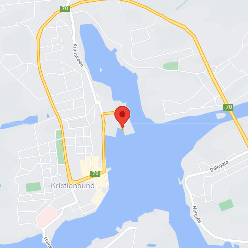

Visit
Location
The museum is located at Harbor Street 5, in the city center of Kristiansund.
Hours
Monday: Closed Tuesday: 10:00 – 16:00 Wednesday: 10:00 – 16:00 Thursday: 10:00 – 16:00 Friday: 10:00 – 19:00 Saturday: 09:00 – 16:00 Sunday: 09:00 – 13:00

Admission
The entrance is free for all. There are guided tours of the museum that leave every hour. These tours are 70 NOK per person and include a handy printed guide of the museum. If you would like to organise a guided tour for your group of 6 or more people, please contact us to arrange the tour.
Accessibility
The museum has wheelchair accessibility ramps. It also has audio guides and braille display signs for the visually impaired.
Food & Drink
There is a café attached to the museum where you can get light lunches, soft drinks, coffee, snacks and more.
Shop
Our shop offers a range of memorabilia from the museum as well as great gifts and activity packs that allow you to continue to explore science even after you’ve left the museum.